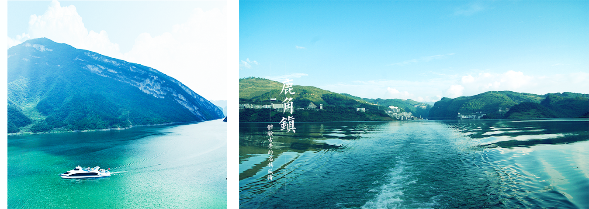

In the town of antler, the town of antler is located in the southeast of pengshui county, with a span of 115.49 square kilometers and 29 kilometers from the county seat. The highest elevation is 1,423 meters, The lowest altitude of 340 meters, located in the middle and lower reaches of the wujiang river, the throat of the pengyouhighway, is the fold area where the wuling mountain system and the great loshan system meet. It is a typical minority mountain town. The whole town has 46 surnames, such as ran, zhang, wang and li. There are miao, tujia, dong and han. The wujiang river runs across from the south to the north, and the river flows from east to west into the wujiang river. The domestic process is 26 kilometers. From antlers town 25 kilometers, the miao nationality garden is a collection of saddle, miao miao song dance, people village, MiaoWen custom, MiaoXiang natural scenery landscape in the integration of the miao customs tourist scenic spot. In 2000, the people's government of chongqing called it the "hometown of folk songs". This is also the origin of the hmong dance. The famous miao song "jiajiao" is a singing song. The anzi people are hospitable and hospitable, and can fully experience the ancient miao customs.
